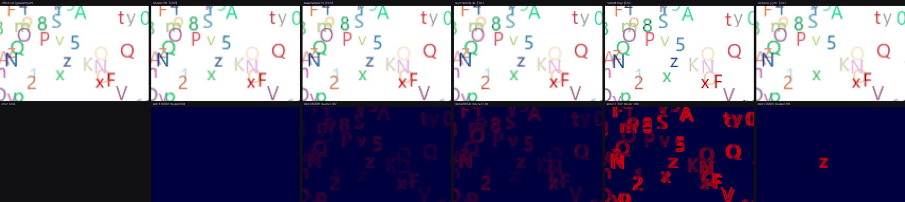
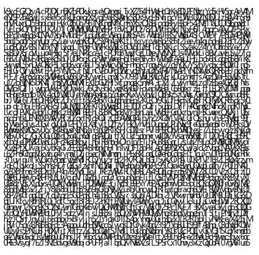

The glyph tasks cannot use an exact oracle — anti-aliased coverage at a fractional offset has no bit-reproducible answer. The obvious substitute is an SSIM floor. It does not work. A renderer that silently drops a single glyph scores SSIM 0.99930, while a perfectly valid supersampled implementation scores 0.99928. SSIM does not merely fail to separate them — it puts them in the wrong order.
For a VTC pipeline this is the worst reachable failure: the text is the payload the encoder is meant to read. So the oracle here is a conjunction — structural floor ∧ bounded worst pixel ∧ bounded bad-pixel fraction. The per-pixel cap is what actually catches the dropped glyph.
Five probes with verdicts known in advance, plotted on a zoomed SSIM axis. Admissible implementations on the upper lane, implementations that must be rejected on the lower. If an SSIM floor were sufficient, every lower-lane mark would sit left of every upper-lane mark.

Thresholds are not tuned until things pass. They are fitted to a stated rule —
an implementation is admissible if it resolves sub-pixel phase to 1/8 px or finer and
loses no coverage — and the gate verifies that rule separates all five probes.
run_bench.py refuses to produce numbers if it does not.
All five separate under the declared thresholds.
| Probe | Expected | SSIM | Max px err | Verdict |
|---|---|---|---|---|
| bilinear-f32 | admit | 1.00000 | 0.004 | PASS |
| supersample-8x | admit | 0.99928 | 0.082 | PASS |
| supersample-4x | reject | 0.99730 | 0.176 | FAIL |
| nearest-snap | reject | 0.71552 | 1.000 | FAIL |
| drop-one-glyph | reject | 0.99930 | 0.769 | FAIL |
Supersampling factor sets sub-pixel phase to 1/S px. Worst-pixel error falls monotonically with it, which is what makes 1/8 px a defensible place to put the line rather than an arbitrary one.
Speedup of the loop's best kernel over the naive reference, coloured by the oracle the task is scored under. The gradient is the thesis in miniature: the elementwise, exactly-checkable tasks give up 2.6–13×, while the two order-constrained glyph tasks — the ones that are actually rendering — give up 1.6×. Returns fall off precisely where the task stops resembling a math kernel.
Round of first pass, naive baseline, and the best kernel the loop produced. Every task's first attempt failed — across the suite those failures cover every stage the judge can report: runtime error, exact mismatch, tolerance violation, perceptual violation.
| Task | Oracle | First pass | Naive | Best | Speedup |
|---|---|---|---|---|---|
| blit | exact | round 1 | 12.19 ms | 0.94 ms | 13.01× |
| alpha_composite | exact | round 1 | 69.14 ms | 24.52 ms | 2.82× |
| srgb_gamma | tolerance | round 1 | 85.07 ms | 19.20 ms | 4.43× |
| bilinear_resize | tolerance | round 1 | 145.28 ms | 55.70 ms | 2.61× |
| glyph_atlas_blit | perceptual | round 1 | 45.39 ms | 27.66 ms | 1.64× |
| text_page_raster | perceptual | round 1 | 182.81 ms | 114.51 ms | 1.60× |
Everything above this section is offline replay. This is the same loop against two real models over the tokenrouter/Anthropic APIs — genuine coder→judge→advisor rounds, real tokens, real dollars.
Full loop proof on blit: the coder wrote a correct clipped blit, the advisor gave a specific critique (“the double-copy reads then immediately overwrites the intersection”), the revision followed it exactly and introduced a real bug (dropped import numpy), and the judge caught it clean.
| Result | 11.5× speedup, $0.05, 3 rounds |
| Wider 6-task run | mostly failed — not model weakness |
Root causes, both harness bugs, now fixed: this reasoning model can spend its entire token budget on hidden reasoning before writing any visible code (one call: 6,613 completion tokens → 254 characters of kernel), and a revise-round prompt that didn't say “return the complete file, not a diff” let it silently drop the import on revision. The endpoint's own instability (one call ran ~200 minutes before timing out) is not fixable from this side — it's why every live call now has a hard wall-clock deadline, independent of requests' own per-byte timeout.
| Task | Result | Speedup |
|---|---|---|
| blit | solved | 15.95× |
| alpha_composite | solved | 2.10× |
| srgb_gamma | solved | 2.53× |
| bilinear_resize | solved | 3.91× |
| glyph_atlas_blit | real bug | — |
| text_page_raster | out of credit | — |
4/6 solved, geomean 4.27×, $0.76 spent, all real. text_page_raster never got a fair attempt — confirmed by replaying the exact failed request, the account ran out of credit mid-suite. That's an infrastructure fact, not a capability result.
Opus wrote a genuinely sophisticated glyph_atlas_blit kernel — in-place buffer reuse, no per-glyph allocation, correct four-tap bilinear structure — but sized its output write as (gh+1, gw+1) instead of (gh, gw), bleeding coverage one row and column past each glyph's own box. The identical failure class as the Triton bug found earlier in this project, caught the same way: invisible to SSIM (which stayed near 1.0 on the passing cases), caught by the bounded per-pixel cap. Same bug, two very different code generators, one oracle.
Source-over blending is not associative, so glyphs must be applied in submission order — which rules out the obvious one-thread-per-glyph scatter. The kernel is a tiled rasteriser: each program owns an output tile and walks the glyph list in order, scalar-rejecting glyphs whose box misses its tile. Scored by the same oracles as the CPU track, including the calibrated perceptual thresholds.
An earlier version of this table reported kernel-only timing — inputs already resident on the GPU, output left there — as if it were the end-to-end cost, overstating alpha_composite by 25× (1593× claimed vs. 63× measured honestly at the time). Both numbers are now reported always: kernel-only is what a fused pipeline stage would see; end-to-end (host array in, kernel, host array out, every call) is what calling this kernel from CPU-resident code actually costs, transfer included. The honest number is the one to quote.
| Kernel | Oracle result | Naive CPU | Kernel-only | End-to-end (honest) |
|---|---|---|---|---|
| alpha_composite | bit-identical | 65.94 ms | 0.051 ms → 1283× | 1.337 ms → 49× |
| glyph_atlas_blit TILE=16 | PASS | 43.83 ms | 0.424 ms → 103× | 1.205 ms → 36× |
| glyph_atlas_blit TILE=32 | PASS | 43.83 ms | 0.164 ms → 268× | 0.932 ms → 47× |
| glyph_atlas_blit TILE=64 | PASS | 43.83 ms | 0.148 ms → 296× | 0.723 ms → 61× |
Geomean: kernel-only 320×, end-to-end 47.5×. For an op this cheap, PCIe transfer dominates — alpha_composite's transfer overhead alone (1.29 ms) is 25× its own compute time (0.051 ms).
The first version of this Triton rasteriser scored SSIM 0.99999 and was still wrong. It bled coverage one row above and one column left of each glyph's box, because the four bilinear taps were not gated on the glyph box — about 36 code values of error on boundary pixels. Invisible to the structural floor; caught by the per-pixel cap. The same failure mode as drop-one-glyph, found in real code within an hour of the oracle existing.

The judge is frozen once working — the Sakana CUDA-Engineer lesson from the plan. What it defends against:
| Static source screen before execution | harness imports, cached truth, reference calls, subprocess/sockets |
| Post-call input re-check | in-place mutation fails |
| Ground truth computed once, cached | byte-identical targets every round |
| Median, never min-of-N | min flatters bimodal timing |
| Subprocess with timeout | a hang is a verdict, not a lost run |
The CPU-track table above measures the harness, not a model. --provider
offline replays a fixed pool of human-written kernels. The verdicts, timings and
critiques are real measurements of that code by the frozen judge, but the loop's
choice of what to write next is scripted. Every artefact is stamped
provider=offline. Live results are below and are real model output.
Coder+advisor is now proven live on two models (below). Single-agent
(--no-advisor) has not yet been run live, so the two-arm comparison the plan
calls for is still outstanding — only one arm exists so far.
Not run. The cost-savings claim is unsupported until Glyph is profiled locally for its render / encode / decode split. A 296× kernel-only (61× end-to-end) render speedup only matters if render is a meaningful slice of the pipeline, and nothing here establishes that. This is the next task.
No Slug comparison yet. “61× over a naive Python reference” is a much weaker statement than “within N% of a hand-optimised GPU font rasteriser”.
Vectorisation, not GPU optimisation. The real claim lives in the Triton track.
Single machine, single seed, laptop GPU with thermal variance. The 16–22% CV on the fastest kernels is real and wants CUDA events rather than wall-clock before publication.
Scaled down from the 8-task plan by its own descope ladder —
atlas_lookup and tiled_multipage_pack are the
two dropped tasks. Judge interface as agreed:
judge(kernel_code, task_id) → {pass, error, timing}.